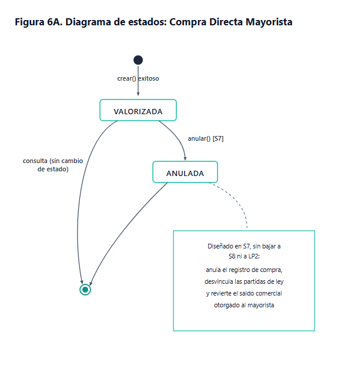

Trazabilidad Técnica y Conclusiones
Articulación rigurosa de las 4 sesiones en una solución de software escalable y confiable.
Cada regla de negocio identificada en el dominio (S01) se plasmó en el diagrama de clases (S02), se refinó con principios SOLID (S03) y se orquestó dinámicamente (S04).
La adopción del Monolito Modular con Spring Boot y Oracle XE asegura integridad transaccional ACID para acopio y liquidación sin la sobrecarga de microservicios.
Las máquinas de estados (Figura 6) garantizan que compras y liquidaciones sigan transiciones legales (REGISTRADA ➔ EN_BÓVEDA ➔ LIQUIDADA) previniendo inconsistencias contables.
Inyección de dependencias (DIP), contratos desacoplados (ISP) y validaciones Jakarta aseguran que el backend sea fácilmente testeable y consumible por Angular.
